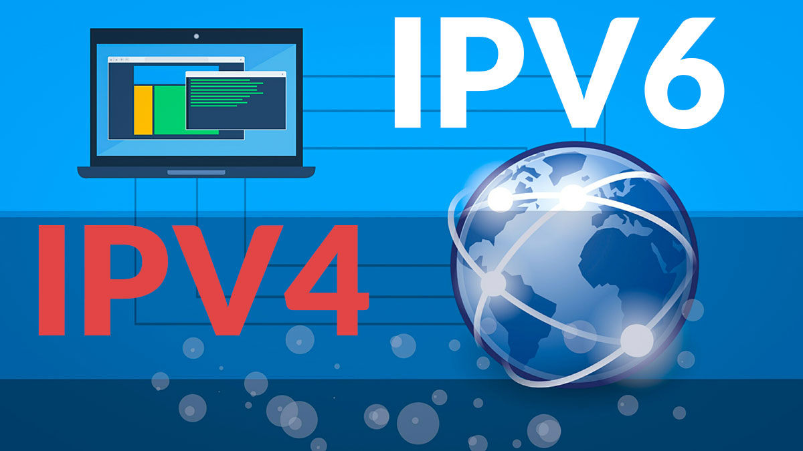
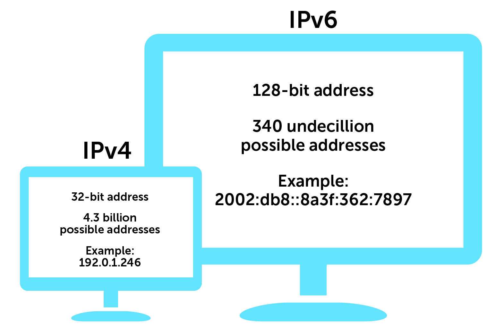
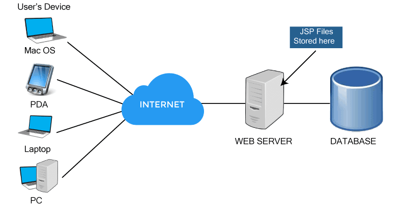

* En 1955, Tim Berners-Lee, un científico de la computación británico, es reconocido como el padre de la Web.
Los inicios de HTML se remontan a su trabajo en el CERN (Centro Europeo de Investigación Nuclear).
* En 1980, Tim Berners-Lee, físico e investigador del CERN, propuso un sistema de "hipertexto" para compartir
documentos, permitiendo a los usuarios acceder a información relacionada con los documentos electrónicos que
visualizan.
* En 1991, junto al ingeniero de sistemas Robert Cailliau, presentaron la propuesta ganadora llamada
WorldWideWeb (W3). Esta propuesta incluía la primera descripción formal de HTML bajo el nombre "HTML Tags",
que aún se puede consultar en línea como una reliquia informática. En este momento nació el protocolo HTTP
y las páginas HTML.
* En 1993, se realizó la primera propuesta oficial para convertir HTML en un estándar por parte del organismo
IETF. A pesar de avances significativos, ninguna de las dos propuestas de estándar, HTML y HTML+, lograron
convertirse en estándar oficial.
* En 1994, Tim Berners-Lee y el MIT crearon el consorcio W3C (World Wide Web Consortium) con el objetivo de
definir estándares para Internet. En ese mismo año, Håkon Wium Lie y Bert Bos comenzaron a trabajar en un
nuevo lenguaje llamado CSS.
* En 1995, se publicó el primer estándar oficial de HTML, HTML 2.0, mientras que dentro de la W3C se empezó
a trabajar en el borrador de HTML 3.0. Ese mismo año, el W3C decidió enfocarse en el desarrollo y
estandarización de CSS.
* En 1996, se publicó la versión HTML 3.2 como la primera recomendación de HTML por el W3C, junto con la
especificación oficial de CSS1. En 1998 se lanzó HTML 4.0, que introdujo hojas de estilos CSS y otras mejoras
significativas.
* En 1999, se publicó la última especificación oficial de HTML, HTML 4.01, mientras que el trabajo en CSS3
comenzaba. Además, empresas como Apple, Mozilla y Opera formaron WHATWG debido a preocupaciones sobre el interés del W3C en HTML.
* En 2011, varios módulos de CSS3 se convirtieron en recomendaciones oficiales de la W3C. En ese mismo año,
HTML5 se convirtió en un estándar recomendado y se presentó como una plataforma web abierta junto con
Javascript y CSS3 para el desarrollo de aplicaciones multiplataforma.
IPV4
Presentado en 1978, el protocolo IPv4 estandariza la forma en que los ordenadores se comunican entre sí
en Internet. Es un protocolo sin conexión, lo cual significa que los datos se pueden enviar sin que las
partes inviertan tiempo en establecer una conexión directa, y solo requiere pequeñas cantidades de memoria.
IPv4 ofrece más de 4 mil millones de direcciones únicas, lo que parecía más que suficiente cuando fue creado,
pero en 40 años pueden cambiar muchas cosas. Dado que cada vez hay más dispositivos en línea, IPv4 está
llegando a su límite.

IPV6
IPv6 (Internet Protocol versión 6) es un estándar actualizado para identificar ordenadores en Internet.
Al igual que IPv4, proporciona un identificador único a cada dispositivo, pero uno que se ha ajustado para
adaptarse al creciente número de ordenadores conectados a Internet en la actualidad.
IPv6 aumenta el número de direcciones IP posibles desde los 4 mil millones de IPv4 hasta los 340 billones
de billones de billones. IPv6 se escribe como una cadena hexadecimal de dígitos de 128 bits, y una dirección
IPv6 típica es algo así:
2001:0ab8:85a2:0000:0000:8a3e:0370:7334
IPv6 se ha optimizado para estar al día con el Internet modernizado de la actualidad.

Protocolo y Direcciones
TCP/IP
La forma en que los computadores transfieren datos de un dispositivo a otro está regulada por TCP/IP.
Para garantizar que el destinatario reciba la misma información que el emisor, estos datos deben ser precisos.
¿Qué es TCP/IP y cómo funciona? El modelo TCP/IP divide los datos en paquetes y los vuelve a juntar
para formar el mensaje completo en el destino para garantizar que cada comunicación llegue intacta al destino
deseado. Mantener la exactitud es más fácil con paquetes pequeños de datos que con todos los datos a la vez.
En caso de congestión, cada mensaje individual puede seguir diferentes rutas. Es como enviar diferentes
tarjetas de cumpleaños por correo a la misma casa. Las tarjetas comienzan su recorrido en su casa, pero
podría colocarlas en diferentes buzones para que cada una tenga un camino diferente hasta la dirección del
destinatario.
El modelo TCP/IP divide los datos en cuatro capas cuando envía algo por Internet, ya sea un mensaje,
una foto o un archivo. Los datos primero atraviesan estas capas en un sentido, y luego lo hacen en sentido
contrario cuando se reúnen en destino.
Debido a que todos los procesos están estandarizados, el modelo TCP/IP funciona. Sin estandarización, la
comunicación podría volverse impredecible y las operaciones ralentizarse, y un Internet rápido depende de
la eficiencia. El modelo TCP/IP es uno de los métodos más eficientes de transferencia de datos por Internet.
Dirección IP
Una cadena de números separada por puntos es la dirección IP.
Las direcciones IP son un conjunto de cuatro números. Por ejemplo, 192.158.1.38 es una de esas direcciones IP.
Cada conjunto tiene un número de 0 a 255. Como resultado, la gama completa de direcciones IP
de 0.0.0.0 a 255.255.255.255.
El protocolo de Internet funciona de la misma manera que cualquier otro idioma, transmitiendo información
a través de pautas establecidas. Este protocolo permite que todos los dispositivos conectados encuentren,
envíen e intercambien información entre sí.
Cualquier computadora, independientemente de su ubicación, puede comunicarse con personas que hablan el
mismo idioma.
Servidores
DHCP
En una red, cuando conectamos varios equipos, estos deben tener registrada una dirección IP diferente
dentro de un segmento o rango de red determinado. Para que estos equipos puedan comunicarse
y compartir información entre sí. En el pasado, esta comunicación era establecida manualmente pero con el
tiempo era evidente que no era viable dedicar recursos y tiempo de un administrador de sistemas a
configurar manualmente cada nuevo equipo que se conectaba a la red. Es en este punto donde aparece el
término Servidor DHCP, para hacer una administración centralizada y automática de los parámetros de red.
El protocolo DHCP, en inglés, Dynamic Host Configuration Protocol, es una extensión del protocolo
Bootstrap (BOOTP) desarrollado en 1985 para conectar dispositivos como terminales y estaciones de trabajo
sin disco duro con un Bootserver, del cual reciben su sistema operativo. Su función fue la de ofrecer
solución a redes de gran tamaño y la incipiente presencia de puestos de trabajo móviles como portátiles
o think-clients, asignando direcciones de red automáticamente de modo que fueran reutilizables.
DNS
Un servidor DNS (también llamado servidor de nombres) es un software de servidor especial que utiliza una base
de datos DNS para responder a las consultas relativas al DNS. Dado que los servidores DNS suelen estar
alojados en hosts dedicados, los ordenadores que contienen los programas correspondientes también se denominan
servidores DNS.
WEB
Un servidor web algunas veces puede ser definido como un hardware y como un software; porque efectivamente posee
cualidades de ambos.
Los servidores web deben tener un hardware, que es el equipo que resguarda la información que será transmitida
al ser solicitada por los usuarios. Estos soportes físicos deben tener una amplia capacidad de almacenamiento
y suelen ser potentes equipos computacionales compartidos por diversas empresas y usuarios.

Correos
El servicio de correo electrónico sirve para enviar y recibir mensajes de forma rápida y sencilla, sea a una
o miles de personas de vez. Además, permite adjuntar archivos, imágenes y otros documentos en el mensaje.
Dependiendo de la plataforma de correo electrónico que elijas para trabajar, es posible también crear carpetas
y
etiquetas para una mejor organización, personalizar la firma y el aspecto del correo electrónico.